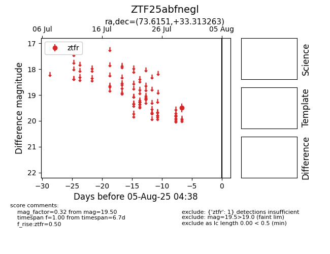

Target ZTF25abfnegl at 2025-08-05 04:38, see:
FINK: fink-portal.org/ZTF25abfnegl
Lasair: lasair-ztf.lsst.ac.uk/objects/ZTF25abfnegl
ALeRCE: alerce.online/object/ZTF25abfnegl
alt names
ZTF25abfnegl (ztf,fink)
coordinates:
equatorial (ra, dec) = (73.6151,+33.31326)
galactic (l, b) = (170.1430,-6.48325)
photometry
last ztfr=19.50
1 ztfr detections
